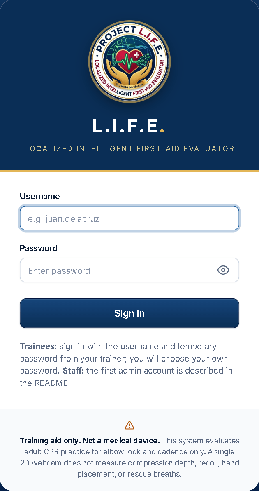
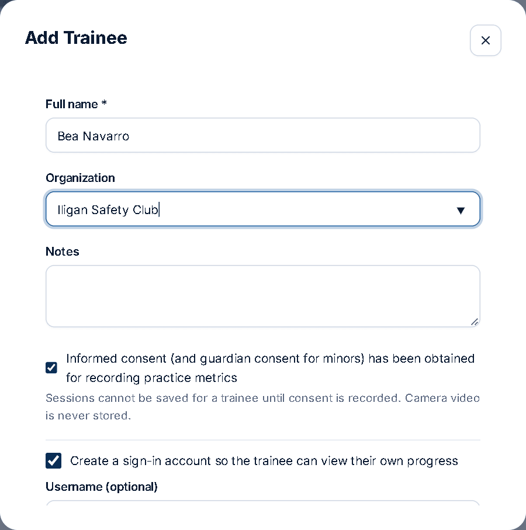
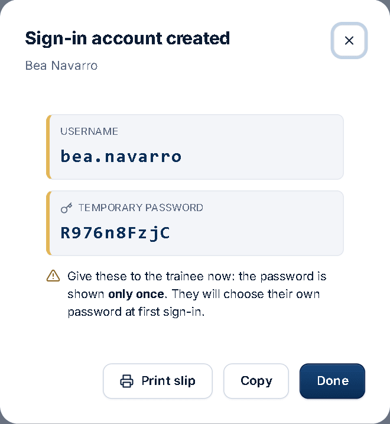
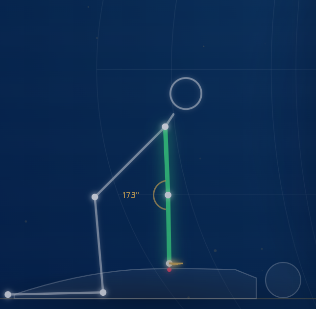
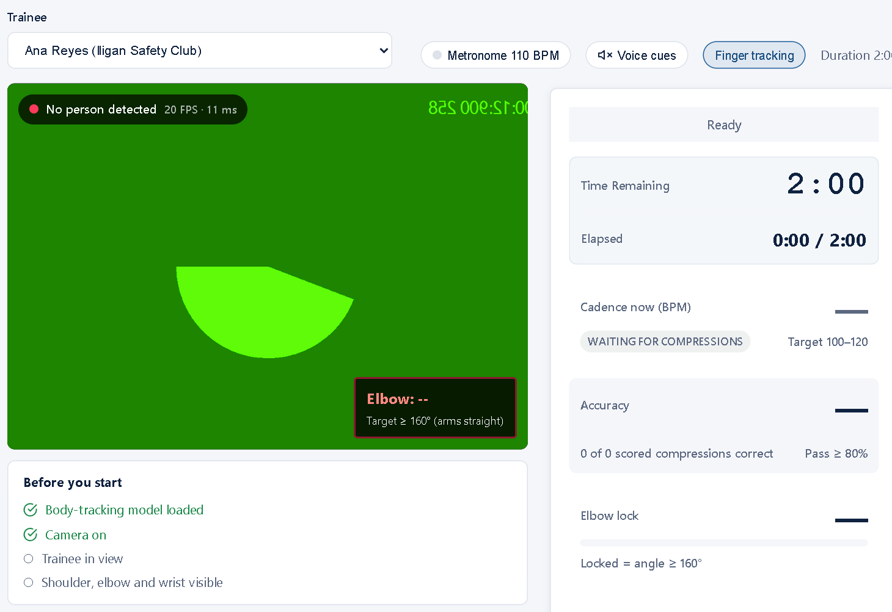
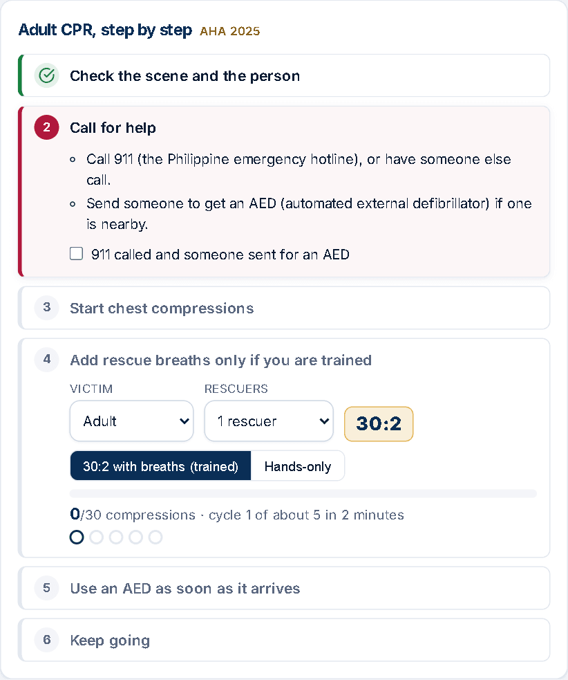
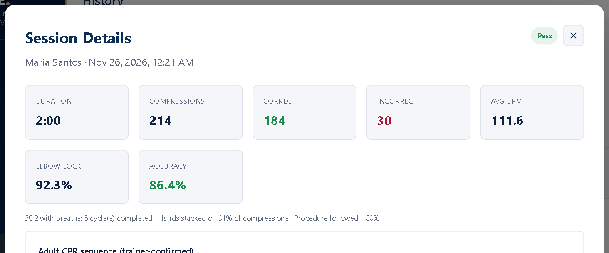
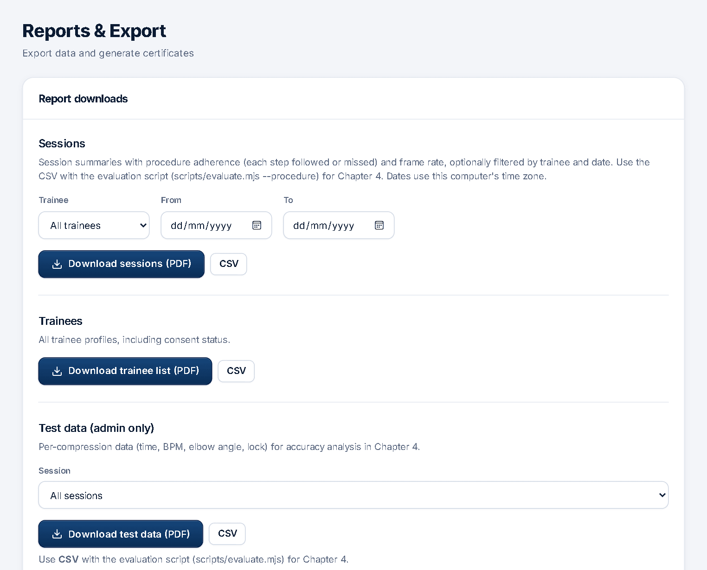
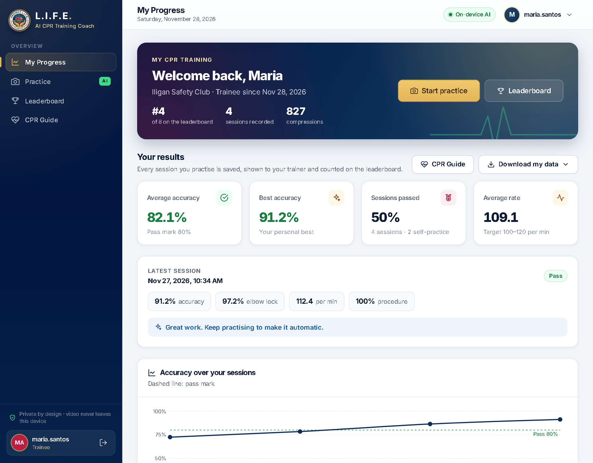

admin
PasswordLifeCPR@2026
Sign in, add a trainee, set up the camera and run a 2-minute CPR practice.
Open Chrome or Edge and go to https://l-i-f-e.onrender.com

Type:
Click Sign In.
You will see the Dashboard (the home screen).

The Add Trainee form: name, organization and the consent box.

A box shows the trainee’s username and temporary password.
Click Print slip or write them down, then click Done.

Seen from the side: arms straight (green), shoulders over the hands.


In the “Adult CPR, step by step” panel, tick each box in order as the trainee does it. The next box unlocks after the one before.
Then click ▶ Start compressions. A 3-2-1 countdown starts the 2-minute timer.
When the 2 minutes are up, the result appears. You can open it again later from History.

Click Reports & Export on the left menu.

When a trainee practises on their own account, the Dashboard shows it live in the Live session monitor. The saved session then appears in Recent sessions and Session History with a Self-practice label, and it counts on the Leaderboard straight away.
Open Settings & Backup. In Data & backup:
The Dashboard also has a Download backup button.
Practise by yourself, see your results and rank, and download your data.
Your page shows your number of sessions, your best and average accuracy, a tip for next time, and all your results.

Click Practice on the left menu. It works like the trainer’s Live Session (steps 5–9 in Part A), using your own name. Each practice session is recorded: it appears in My Progress, your trainer sees it (live while you practise, then in their history), and it counts on the Leaderboard.
Click CPR Guide to review the CPR steps any time.
Click Leaderboard. The card at the top says your rank (for example You are #3 of 25), and your row is highlighted and marked You. Other trainees are shown by first name and initial only.
On My Progress, click Download my data:
Click Certificate next to any session in My sessions for a Certificate of Practice Completion (PDF).
Most problems are fixed in a few seconds.
| Problem | What to do |
|---|---|
| The website is slow to open | Wait about 1 minute. It was sleeping. |
| “Invalid username or password” (admin) | Use admin and LifeCPR@2026. |
| A trainee can’t sign in | On the free website, trainees are forgotten after about 15 minutes with no visitors. Add the trainee again and give them a new slip. |
| “Too many failed attempts” | Wait 5 minutes, then try again. |
| The camera doesn’t start | Click the camera icon in the address bar and choose Allow. Close other apps that use the camera (Zoom, Messenger). |
| “Start compressions” is grey | Wait until all 4 checks are green, and tick the 4 CPR steps in order. |
| “No person detected” | Step back, turn on more lights, and turn sideways to the camera. |
| Pushes are not counted | Move the laptop a little closer (about 2 metres) and keep the arm in view. |
| The result can’t be saved | The trainee’s consent is missing: go to Trainees, click Edit, tick consent. |
Print this page and keep it next to the laptop.